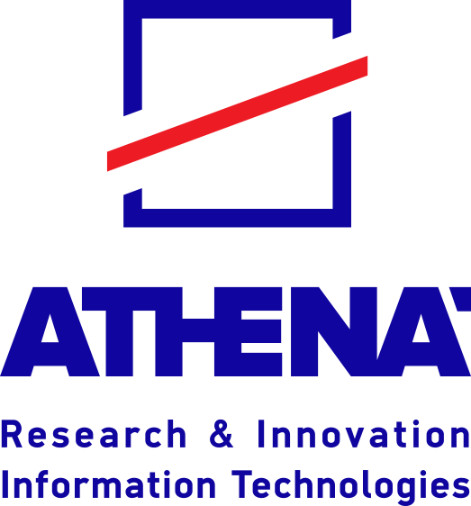
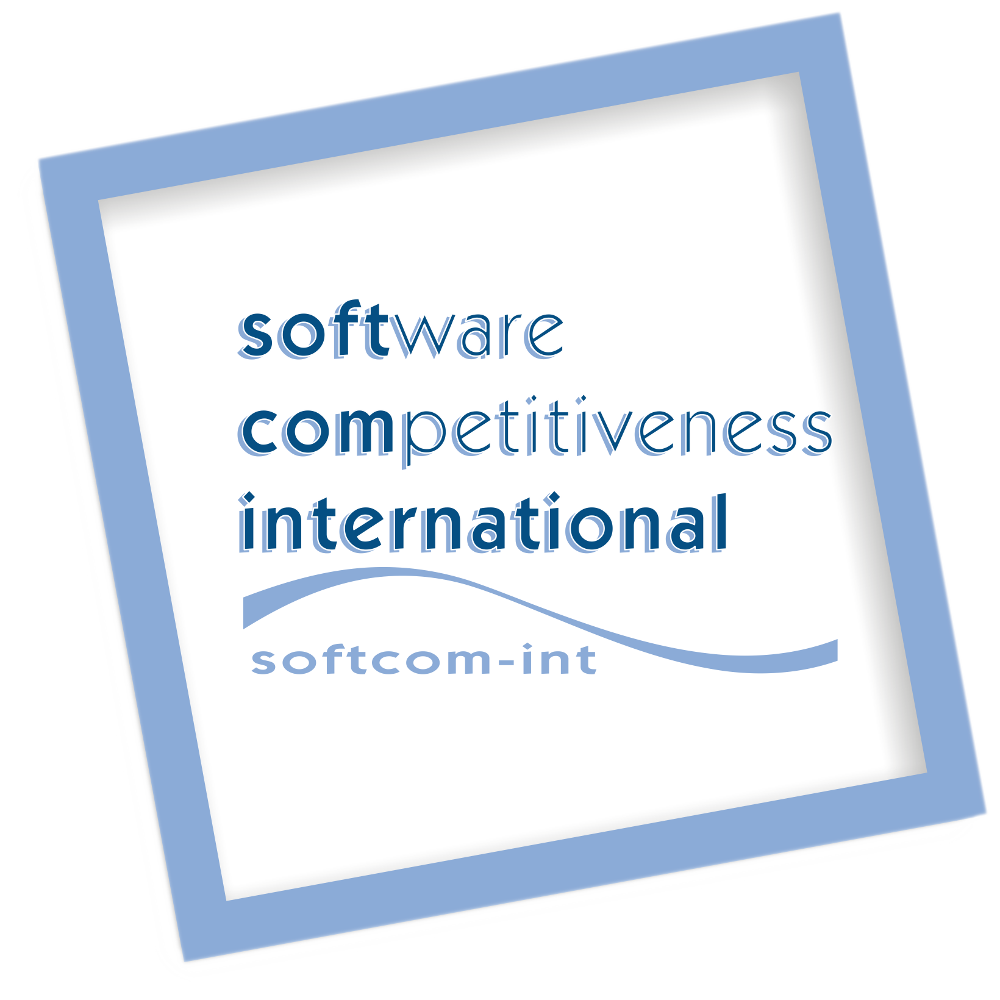

Graduate Research Intern
Mar. 2024 – Aug. 2024
Researched fair preference aggregation in optimization-based voting rules.

Research Associate
Jan. 2023 – Feb. 2024
- Subgroup Fairness Auditing: Detected bias in AI models using counterfactual explanations, assessing fairness in achieving recourse at individual and group levels. Presented at NeurIPS 2023.
- FACTS Framework Integration: Contributed to the development of the FACTS framework, which is integrated into the AI Fairness 360 toolkit for bias detection.
- Global Counterfactual Methods: Designed clustering-based methods for global counterfactuals; paper under submission.
- Robust Fairness via Randomization: Studied randomization's role in achieving robust fairness without known protected attributes. Presented at ICDEW 2024.

Research Assistant
National Technical University of Athens
May 2021 – Dec. 2023
- Label Ranking (LEADAlgo Project): Introduced a nonparametric regression approach, providing theoretical guarantees and efficient algorithms. Presented at ICML 2022; selected as Long Presentation (Top 10%).
- Timeseries Clustering (BALSAM Project): Implemented clustering techniques for timeseries using Sparse Gaussian Process Regression and k-means. Journal publication.

Machine Learning Engineer
Software Competitiveness International
Jun. 2019 – Dec. 2020
- ProPML (ESA/ESOC Funded): Led analysis and visualization of ESOC ground system logsusing Elastic Stack and Python. Created a labeled dataset for anomaly detection in ESOC ground systems. Designed and implemented machine learning models for anomaly detection using RNNs. The findings were presented in ESAW 2021 and WPMC 2022.
- ATMS (ESA/ESTEC Funded): Designed a recommender system for automated testing, enhancing test management efficiency.
Software Engineer
Software Competitiveness International
Oct. 2017 – Jun. 2019
Built backend solutions for an e-commerce platform and designed decision-making applications for space industry projects.
- Backend E-commerce Platform Development: Developed backend and search features using Java, Spring Boot, and ElasticSearch; created complex filtering and predictive text functionalities.
- Frontend E-commerce Platform Development: Built user interfaces and bug-fixing using Angular, Bootstrap, and HTML5.
- NUI (ESA/ESOC Funded): Designed and implemented a Ground Station Schedule Editor Eclipse RCP application, with a Business Rules Engine for validation in the backend. Used Java FX and JBoss Drools.